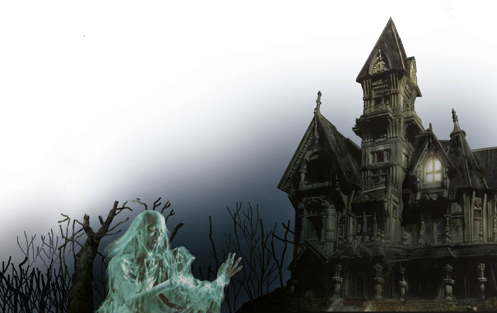

Reflexiono para avanzar
Alumno:
Reflexiono para avanzar
Alumno:
Lee el fragmento de una novela.
El fantasma de Canterville
(Adaptación)
Cuando míster Hiram B. Otis, el ministro de los Estados Unidos, adquirió el castillo de Canterville, todo el mundo le dijo que cometía una gran necedad, porque aquella finca estaba embrujada. Incluso el propio lord Canterville, caballero de la más escrupulosa honradez, se creyó en el deber de advertírselo a míster Otis cuando trataron de las condiciones.
—Nosotros mismos —dijo lord Canterville— nos hemos resistido en absoluto a vivir allí desde la época en que mi tía abuela, la duquesa viuda de Solton, contrajo una dolencia de la que no se repuso nunca del todo, causada por el espanto que experimentó al sentir que dos manos de esqueleto se posaban sobre sus hombros cuando se vestía para cenar. Creo mi deber decirle, míster Otis, que el fantasma ha sido visto por varios miembros de mi familia que viven aún, así como por el párroco del pueblo, el reverendo padre Augusto Dampier, rector del King’s College de Cambridge. Después del deplorable accidente ocurrido a la duquesa, ninguno de los sirvientes quiso seguir en nuestra casa, y lady Canterville no pudo ya conciliar el sueño a causa de los ruidos misteriosos que sonaban en la galería y en la biblioteca.
—Milord —contestó el ministro—, adquiriré el inmueble con el fantasma por el mismo precio. Vengo de un país moderno en el que podemos tener todo cuanto puede proporcionar el dinero, y como nuestros jóvenes son muy avispados y recorren divirtiéndose todo el viejo continente, quitándoles a ustedes sus mejores actrices y prima donnas, estoy seguro de que si queda todavía un auténtico fantasma en Europa, vendrán a buscarlo para colocarlo en uno de nuestros museos públicos o para exhibirlo como un fenómeno de feria.
—Me temo que el fantasma existe —dijo lord Canterville sonriendo—, aunque se haya resistido hasta hoy a las ofertas de los decididos empresarios yanquis. Hace más de tres siglos que se le conoce; data con precisión de mil quinientos ochenta y cuatro, y no deja de aparecer nunca cuando va a ocurrir alguna defunción en la familia.
—¡Bah! Los médicos de cabecera hacen lo mismo, lord Canterville. Amigo mío, los fantasmas no existen ni creo que las leyes de la naturaleza admitan excepciones en favor de la aristocracia inglesa.
—Realmente son ustedes apasionados por la naturalidad —replicó lord Canterville, que no acababa de comprender la última observación de míster Otis—. Ahora bien: si le gusta a usted tener un fantasma en casa, mejor que mejor; acuérdese únicamente de que yo le previne.
Unas semanas después se cerró el trato, y al terminar la temporada, el ministro y su familia se trasladaron al castillo de Canterville. […]
Como el castillo de Canterville está a siete millas de Ascot, la estación más próxima, míster Otis telegrafió que salieran a buscarlos en un coche abierto y emprendieron la marcha en medio de la mayor alegría. Era una noche deliciosa de julio y el aire estaba aromado de olor a pinos. De cuando en cuando oíase a las palomas arrullándose con su más dulce voz, o divisábase entre la maraña rumorosa de los helechos la pechuga de oro bruñido de algún faisán. Ágiles ardillas los espiaban desde la copa de las hayas, a su paso, y los conejos corrían como exhalaciones a través de los matorrales o por los collados herbosos, tiesos sus rabos blancos. Sin embargo, no bien embocaron en la avenida del castillo de Canterville, el cielo se encapotó repentinamente; un extraño silencio parecía invadir la atmósfera; una gran bandada de cornejas cruzó silenciosamente por encima de sus cabezas y, antes que llegasen al castillo, ya habían caído algunas gruesas gotas.
En la escalinata hallábase para recibirlos una anciana pulcramente vestida de seda negra, con cofia y delantal blancos. Era la señora Umney, el ama de llaves, que mistress Otis, ante los vivos requerimientos de lady Canterville, había accedido a conservar en su puesto. Hizo una profunda reverencia a la familia a medida que se acercaba y dijo con la singular cortesía de los buenos tiempos antiguos:
—Doy la bienvenida a los señores al llegar al castillo de Canterville.
La siguieron, cruzaron un hermoso vestíbulo de estilo Tudor, hasta la biblioteca, un largo y espacioso salón, con un amplio ventanal acristalado al fondo. Estaba preparado el té, y una vez que se quitaron los abrigos de viaje, sentáronse todos, curioseando en torno suyo, mientras la señora Umney iba de un lado para otro, sirviéndolos.
De pronto la mirada de mistress Otis cayó sobre una mancha de color rojo oscuro que había sobre el suelo, precisamente al lado de la chimenea y, sin fijarse en lo que significaba, dijo a la señora Umney:
—Veo que se ha vertido algo en ese sitio.
—Sí, señora —contestó aquella en voz baja—, se ha vertido sangre...
—¡Es espantoso! —exclamó mistress Otis—. No me gustan las manchas de sangre en un salón. Es preciso limpiar eso inmediatamente.
La anciana sonrió y, con la misma voz baja y misteriosa, añadió:
—Es sangre de lady Leonor de Canterville, que fue asesinada en ese mismo sitio por su propio marido, sir Simón de Canterville, en mil quinientos setenta y cinco. Sir Simón la sobrevivió nueve años, desapareciendo repentinamente en circunstancias muy misteriosas. Su cuerpo no se encontró nunca, pero su alma en pena sigue embrujando el castillo.
La mancha de sangre ha sido muy admirada por los turistas y por otras personas, pero es imposible hacerla desaparecer.
—¡Tonterías! —exclamó Washington Otis, el mayor de los hijos—. El producto quitamanchas marca Campeón, de la casa Pinkerton, hará desaparecer eso en un periquete.
Y antes que el ama de llaves, aterrada, pudiese intervenir, se había arrodillado ya y frotaba vivamente el entarimadoz con una barrita de una sustancia parecida al cosmético negro. A los pocos instantes, la mancha había desaparecido sin dejar rastro.
—¡Ya sabía yo que el Pinkerton la borraría! —exclamó en tono triunfal, paseando una mirada circular sobre su familia llena de admiración. Pero apenas había pronunciado aquellas palabras, un relámpago formidable iluminó la estancia sombría, y el retumbar del trueno levantó a todos, menos a la señora Umney, que se desmayó.
Obras completas(Tomo I). Madrid: Aguilar, p. 4.